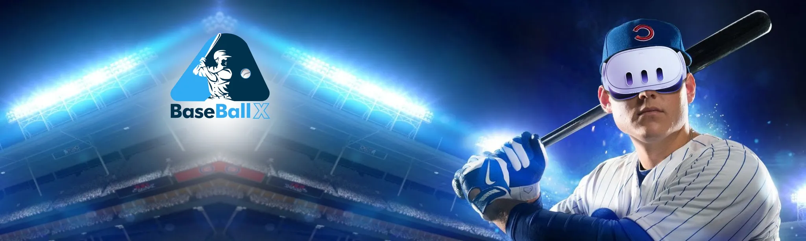

Overview
Baseball X is a physics-accurate VR baseball simulator that lets players train, compete, and analyze their swing in real time. Unlike typical VR sports titles that rely on canned animations, Baseball X uses true bat–ball collision physics for realistic contact and feedback.
I was solely responsible for the game's development. The project grew out of XRev's Cricket X codebase, but baseball is a fundamentally different sport to simulate — so much of my work was rebuilding core systems rather than reskinning them.


What I built
- Bat–ball physics, rebuilt from scratch. Cricket bats are flat; baseball bats are round. That single difference invalidates the entire contact model — deflection angles, sweet-spot behavior, and feedback all had to be re-engineered for cylindrical contact.
- Core gameplay systems and architecture. The fielding system, scoring system, and multiple game modes — everything code-side, including the architectural rework needed to keep the game maintainable as it grew.
- Environment & animation integration. Set up everything delivered by the 3D artists (stadium and environment assets) and the animation team, wiring their work into the game.
- Shader-based impostor crowds. Stadium crowds rendered with the impostor technique used in major sports games: flat geometry whose materials and shaders make each spectator read as a true 3D object from any angle — filling the stands at a fraction of the cost of real meshes.
- Backend integration. Database integration, player accounts, and login — connecting the game to server-side services.
- Companion app. A separate app that lets a coach or friend set up pitches remotely instead of inside VR. It visualizes the pitcher and pitch trajectory, replays the player's last shot, and surfaces swing analytics.
- Website integration (in progress). The Baseball X website is being built to connect with the game for stats and analysis.